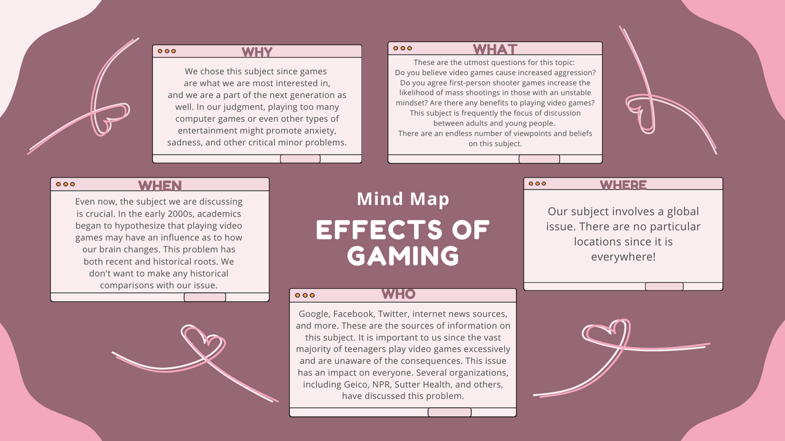

Why did we choose this?
As a teenager who loves playing games, This topic has a connection between us students and gamers. You may be anybody you want in diverse realms seen in video games. That explains why so many people are drawn to it. The purpose of this study is to show how playing video games impacts the brain. It might have both negative and good consequences. Playing too many video games might result in chronic hyperarousal of the brain. The drawbacks of playing video games include an increased risk of aggression, the replacement of real-world issues by video games, the promotion of gambling in some games, a decline in mental and physical health, and a lack of attention and concentration. The benefits include Enhanced cognitive abilities, Logic and problem-solving abilities, Hand-eye coordination, Quicker and more accurate decision-making, Improved attention to detail, Social interaction, and Teamwork.
Their thoughts about our chosen Problem
A brief explanation of our decision-making process. We responded to a set of questions that our teacher had for us. The findings showed that we are all avid gamers. I think we should discuss how gaming affects people. Like some individuals, who are unaware of its effects and only use it for amusement.
Whether or not you play video games, do you think video games are a bad influence on you or younger children? And why?
“I don't think it's a bad influence for me, but for children sometimes it can be. It depends upon the situation”
“If video games are not used in moderation then yes it can affect the young negatively, especially if there is no supervision. Video games tend to circle around violence and that is why they have an age range for those games so probably 13 and below wouldn't download it without parental consent.”
“Yes and no HAHAHA. Some children play games that are not fit for them which may influence them badly. Because They encourage violence against women, racial, sexual, and gender stereotypes, killings in situations like war, occasionally illegal action, disregard for the law and other authorities, and vulgar language and gesticulations. However, it is not inherently a negative influence. As long as the parent or guardian educates them not to do the bad stuff they see in the video games they play, or to not be influenced by them.”
Those are some of their opinions/beliefs that they wrote on our survey
Our 3 Research Questions
1. How do video games affect people’s mentality?
2. Can brutal video games affect a person’s lifestyle?
3. What are the negative and positive effects of playing games?
Despite having grown up in diverse civilizations, video games demonstrate that humans have more similarities than differences. People interact more because of their shared emotional attachment to the game. Gamers that gather in groups to have fun and go on adventures share a common interest. It's got a bad side. Too much gaming can build up emotional regulation, both depression and anxiety, and gaming addiction. These are real problems that mostly happen to teenagers who use gaming to escape or to be distracted.
An escape to reality is to be distracted by a fake one.

Their attitude on the topic is very tame. They take the issue very seriously and provide examples to demonstrate it.